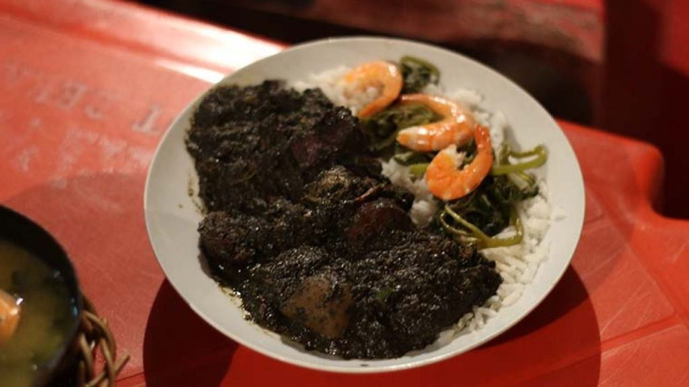

destaque da semana
Sábado da Maniçoba 🌿
Maniçoba feita na panela grande, do jeito paraense, com farinha d’água, arroz e pimenta à parte. Prato grande de R$ 25 por R$ 22 — só no sábado, enquanto durar a panela (sábado fecha às 17h!).
de R$ 25,00
R$ 22,00